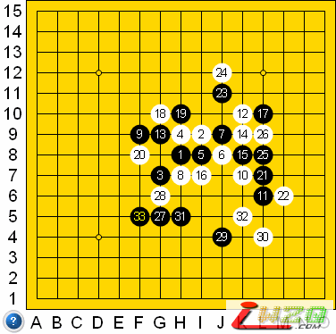

斜月黑9一个不常见的下法
#1 斜月黑9一个不常见的下法 作者：有志青年 发表时间：2007-4-5 14:18:45

zjrenju73 vs 7777777
斜月，黑9直接下在了原本定式的11的位置，这样的目的是下一手如果白按照思维定势走在20的位置，那么黑11不一定再还原到19的位置，因为这时其它的点也就活起来了。
当时白眼见的手法就是进攻，12作棋很凶，如果此时黑13单纯防守几乎是不可行的，然而......黑13！要点，攻防兼备，白接下来14、16说不清好坏，感觉可能还是有些丧失潜力。
白18有些迷惑性，黑还是老实的挡了一下，20应该没什么疑问。
然后黑21开始行动了，23可能有待商榷，因为......白24可能思考不细，虽然这样上方是警报解除了，然而黑正好可以安心经营下边了，后面的实战正是如此；其实白24应该走25位，这样上下都兼顾，效率最高。这说明黑23也有些草率，可能先在25位冲或者直接占27位更好些。
27之后黑的攻击如行云流水（不好意思，有点自夸，哈哈），很快取得了胜利。
#2 Re:斜月黑9一个不常见的下法 作者：木月 发表时间：2007-4-9 21:18:51
12走14的位置，白必胜#3 Re:斜月黑9一个不常见的下法 作者：我爱五子棋伯园 发表时间：2008-10-14 13:56:42
12走14的位置，白不一定必胜#4 Re:斜月黑9一个不常见的下法 作者：无心永恒 发表时间：2008-11-4 0:17:53
34-J6,36-E5能杀下来么#5 Re:斜月黑9一个不常见的下法 作者：wrwak 发表时间：2008-11-7 15:51:30
这棋有什么看头

#6 Re:斜月黑9一个不常见的下法 作者：卖身打胎 发表时间：2008-11-9 2:51:40